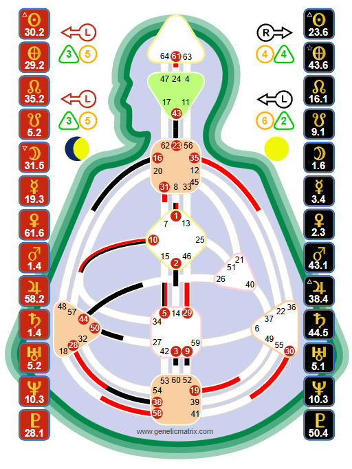

The guide and seer. Projectors do not have sustainable Sacral energy - their gift is not in doing, but in seeing. Their focused aura penetrates deeply into others, making them natural advisors, directors, and leaders when properly recognized and invited.

Tools, not doctrine. The Human Design System was transmitted through Ra Uru Hu beginning in 1987. Genetic Matrix provides these tools for your own exploration and experiment. The chart shown is Mark Zuckerberg - a Splenic Projector.
A Projector is someone with an undefined Sacral center and no motor center connected to the Throat. This mechanical configuration creates a fundamentally different relationship with energy than what Generators and Manifesting Generators experience. Projectors do not have consistent, regenerative life-force energy. What they have instead is something equally powerful: the ability to see.
The Projector's focused and absorbing aura locks onto others and reads them deeply - their energy, their potential, their inefficiencies, their gifts. This is why Projectors are the natural guides, managers, advisors, and directors of the human family. They see what others cannot see about themselves.
Projectors make up approximately 20% of the population. In the current era - as we move away from the dominance of pure doing and toward a more conscious, guided existence - the Projector role is becoming increasingly important. The world needs people who can see clearly and direct energy wisely.
Key Insight
The deepest conditioning Projectors face is the belief that their value lies in doing. In a Generator-dominant world, productivity is currency. Projectors who try to match Generator output burn out, become bitter, and lose access to their real gift: the ability to see, guide, and direct. The Projector's power is not in their labor - it is in their perception.
"Wait for the invitation" is the Projector's Strategy - and it is the most misunderstood Strategy in Human Design. It does not mean waiting passively for life to happen. It does not mean you cannot go to the grocery store without an invitation. It means something very specific:
In the major areas of life - career, relationships, and where to live - Projectors are designed to wait until their gifts have been recognized and they have been specifically invited in. When a Projector pushes their way into these areas without recognition, they meet resistance, rejection, and bitterness. When they wait for the right invitation, they experience success.
The invitation follows recognition. Before someone invites you in, they must first see you - your gifts, your insight, your unique capacity. This is why the Projector's practice includes investing in their own mastery. Study your craft. Develop your skills. Become excellent at what you see. The recognition will follow - and with it, the invitations.
When Projectors offer unsolicited advice - no matter how accurate - it is rarely well received. The penetrating quality of the Projector aura makes uninvited guidance feel invasive. People resist it even when the Projector is right. This creates a painful cycle: the Projector sees clearly, offers wisdom, gets rejected, and becomes bitter. The solution is not to stop seeing - it is to wait until someone asks.
Projectors can have several different Authorities, each providing a unique way to evaluate invitations:
Emotional Authority (Solar Plexus defined): Wait through the emotional wave before accepting any invitation. There is no truth in the now - clarity comes with time. Do not accept invitations in the high or low of the wave.
Splenic Authority: Instinctual, in-the-moment knowing. The Spleen speaks once - a flash of knowing, a body sensation. Trust it immediately. Splenic Projectors can evaluate invitations rapidly, but they must learn to hear the Spleen's quiet voice.
Ego/Heart Authority: The will speaks through commitment. If the Ego says yes to an invitation, it is an all-in commitment. If it says no, do not push. Ask yourself: "Do I have the will for this?"
Self-Projected Authority: Clarity comes through hearing yourself speak. Talk about the invitation with someone you trust - not for their opinion, but to hear your own truth emerge in your voice. The words reveal the answer.
Mental/Environmental Authority: No inner authority - clarity comes from being in the right environment and discussing the invitation with trusted others. The environment itself becomes the sounding board. This is the rarest Projector Authority.
The Projector aura is focused and absorbing. Unlike the Generator's open, enveloping aura that draws everything in, the Projector aura locks onto one person at a time and penetrates deeply. It is a laser, not a magnet.
This focused quality is what makes Projectors extraordinary guides. They are not scanning the room - they are reading one person with total attention. They see the other's energy, their potential, their blocks, their gifts. This is not a choice - it is mechanical. The aura does it automatically.
The absorbing quality means that Projectors take in and amplify the energy of the person they are focused on. In the presence of a Generator, a Projector can feel incredibly energized - they are absorbing and amplifying the Sacral energy. But this energy is borrowed. When the Generator leaves, the energy goes with them. Projectors who mistake borrowed energy for their own end up overcommitting and burning out.
Success is the Projector's signature - the feeling that confirms you are living correctly. It comes not from productivity but from being in the right place, recognized for your gifts, invited into the roles where your seeing is valued. Success for a Projector is the experience of guiding energy effectively and being appreciated for it.
Bitterness is the not-self theme - the signal that something has gone wrong. Projectors become bitter when they push without invitation, when their gifts go unrecognized, when they exhaust themselves trying to keep up with Generator energy, or when they give brilliant advice that nobody asked for and nobody follows.
Bitterness is not a character flaw. It is a navigation tool. When you feel bitter, it is pointing you back toward your Strategy: stop pushing, invest in your mastery, and wait for the recognition and invitations that are correct for you.
Without a defined Sacral center, Projectors do not have consistent, regenerative life-force energy. This is not a weakness - it is a design feature. Projectors are not here to work eight hours a day in sustained physical labor. They are here to work in focused bursts, guided by their ability to see and direct.
Projectors need more rest than Generators. They need to lie down before they are exhausted - ideally before sleep takes them - to allow the borrowed energy of others to discharge from their open Sacral. A Projector who pushes through fatigue is running on amplified energy that is not their own, and the crash is inevitable.
The most productive Projectors are the ones who honor their energy rhythms: focused work when the energy is there, rest and study when it is not. This is not laziness - it is correct energetic management.
Key Insight
Many Projectors find that they are most productive in 3-4 hour focused bursts rather than sustained 8-hour workdays. Structuring your life around these natural rhythms - rather than forcing yourself into a Generator schedule - is one of the most transformative things a Projector can do.
On Genetic Matrix: Generate a free Foundation chart to confirm your Type and Authority. Your specific Authority (Emotional, Splenic, Ego, Self-Projected, or Mental) determines how you evaluate invitations. Advanced and Pro charts reveal deeper layers of your design.
The experiment: For one week, practice not offering advice unless specifically asked. Notice when you want to jump in with guidance - and pause. Wait. When someone does invite your input, notice how differently it is received. Keep track of the invitations that come to you and how they feel in your body.
The celebrity database: Explore Projectors in Genetic Matrix's 87,000+ celebrity database. See how the Projector mechanic manifests in leaders, advisors, and guides across every field.
Overview of all Human Design Types - Strategy, Authority, and aura mechanics.
The life force. Sacral energy, response, and the path to satisfaction.
The multi-passionate hybrid. Speed, response, and informed action.
The initiator. Independence, informing, and the path to peace.
The mirror. Openness, the lunar cycle, and the path to surprise.
See your full chart - your specific Authority, Profile, defined Centers, Channels, and the complete architecture of your Projector design.
Try free with Starter plan →